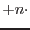

| Parameter | Mand | Type | Default | Constraints |
| withtable | no | boolean | true | true |
|
If set to true a table with numerical data column to be plotted is provided
via parameter table | ||||
| table | no | table | name of existing table | |
| The table to be plotted in
set:table notation (where set is typically a FITS file). | ||||
| title | no | string | ||
| Title for the plot - if none is given the table
name shall be used. | ||||
| subtitle | no | string | ||
| Subtitle for the plot. | ||||
| withx | no | boolean | false | true |
| If true,
the user-specified x column is used for the horizontal axis. If set to
false and index is likewise false the first numerical
column in the table will be taken as the | ||||
| x | no | column | name of existing column | |
| The name of the column to
be used for the | ||||
| withoffsetx | no | boolean | false | true |
|
If set to true all | ||||
| offsetx | no | real | 0. | |
|
| ||||
| index | no | boolean | false | true |
| Whether to use the index
(0,1,2 ...) for | ||||
| withxmin | no | boolean | false | true |
| If true xmin is
set. | ||||
| xmin | no | real | 0. | |
| Lower bound of x axis to show in plot. | ||||
| withxmax | no | boolean | false | true |
| If true xmax is
set. | ||||
| xmax | no | real | 0. | |
| Upper bound of x axis to show in plot. | ||||
| xlog | no | boolean | false | true |
| If true x axis is produced
with logarithmic scaling. | ||||
| withy | no | boolean | false | true |
| If true, a curve is produced
only for the y column that are specified in the y parameter. Otherwise
all numerical columns in the table shall be plotted. | ||||
| y | no | list of compound column identifiers | ||
| A compound column
identifier takes the form:
colname|colname.errcolname|colname.errcolname.errcolname colname[from,to,incr] | ||||
| withymin | no | boolean | false | true |
| If true ymin is
set. | ||||
| ymin | no | real | 0. | |
| Lower bound of | ||||
| withymax | no | boolean | false | true |
| If true ymax is
set. | ||||
| ymax | no | real | 0. | |
| Upper bound of | ||||
| ylog | no | boolean | false | true |
| If true y axis is produced
with logarithmic scaling. | ||||
| withscatter | no | boolean | false | true |
| If set to true
the data is presented as a 2-D scatter plot where each data item is marked by a
symbol (default +). | ||||
| setsymbols | no | list of integers | symbol IDs in Grace | |
|
If withscatter is set to true the data points of
curve | ||||
| setcolors | no | list of integers | color IDs in Grace | |
|
If withscatter is set to true the data points of
curve | ||||
| withxranges | no | boolean | false | true |
|
If set to true the parameter xrangetables must contain a list
of tables with column data that define finite abscissa ranges that
are to be displayed.
| ||||
| xrangetables | no | table list | list of existing tables | |
|
If withxranges is set to true this parameter must
contain a list of tables with data to be plotted as horizontal abscissa data
ranges. For each provided table a separate horizontal line of range markers
shall be plotted - the vertical position of the lines will be
ybaseystride with | ||||
| withalltablesafter | no | boolean | false | true |
|
This parameter facilitates the plotting of a large number of
abscissa range data in consecutive tables in a named data set
(e.g. a sequence of Good-Time-Interval tables as generated by
hkgtigen's diagnostic mode). When set to true
xrangetables is supposed to contain a single table name
and all tables positioned after this table shall be considered
as containing abscissa range data to be plotted.
| ||||
| xrangefromcol | no | column | START | existing column in all xrangetables |
|
The name of the column in all tables given in xrangetables
containing the values of the left boundaries of the abscissa range
markers.
| ||||
| xrangetocol | no | column | STOP | existing column in all xrangetables |
|
The name of the column in all tables given in xrangetables
containing the values of the right boundaries of the abscissa range
markers.
| ||||
| withybase | no | boolean | false | true |
|
If set to true ybase is given.
| ||||
| ybase | no | real | 0. | |
|
The vertical position of the first abscissa marker line corresponding
to the first table in xrangetables. If not explicitly given
a default value based on the actual vertical extent of the plot shall be
used.
| ||||
| withystride | no | boolean | false | true |
|
If set to true ystride is given.
| ||||
| ystride | no | real | 0.1 | |
|
The vertical distance between adjacent abscissa range marker lines in
world coordinates of the plot. If not explicitly given a default value
based on the actual vertical extent of the plot shall be used.
| ||||
| output | no | stdout|file | stdout | |
| destination of output | ||||
| outputfile | no | string | plot.dat | |
| the name of the output file if
output is set to file | ||||
| Parameter | Mand | Type | Default | Constraints |